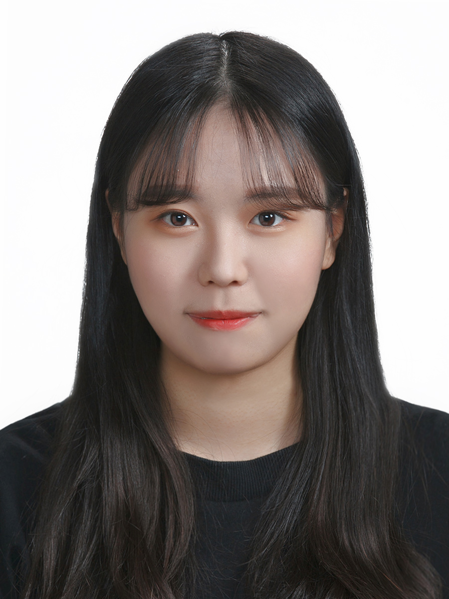

조원경의 신상(?)
- 이름: 조원경(Jo, Won-gyeong)
- 생년월일: 2001.06.04.
- 전공: 중어중문/통계
- 특징: 잠이 많고 누워있는 것을 좋아함
- 인스타: @dnjxr__
조원경의 TMI
- 부산에서 태어났어요
- 오늘은 피시방에서 핫도그를 먹었어요
- 수강정정 나름 성공적이어서 행복해요!!!
- 누구보다 동물을 사랑해요
- 만취하면 인생네컷 꼭 찍어줘야 해요,,
마지막으로 할 말
NEXT에 들어와서 너무 영광입니다,,
1년동안 유의미한 성장과 결과물 만들어내고 싶어요
다같이 화이팅!
그리고 배웠으니 써먹어보는 사각형,,